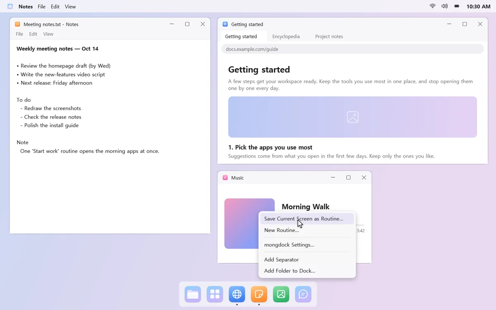
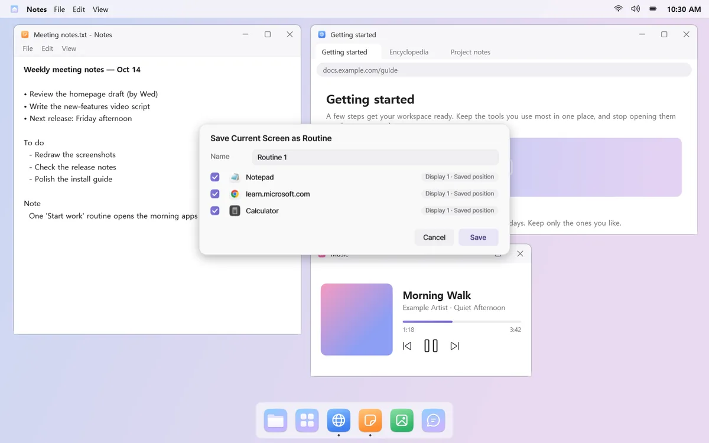
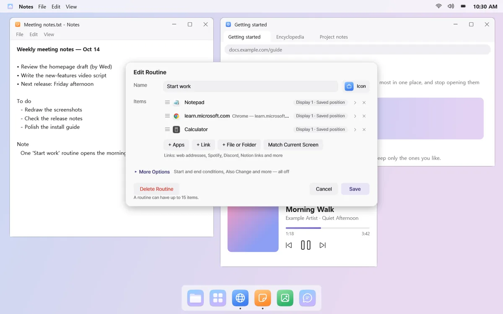
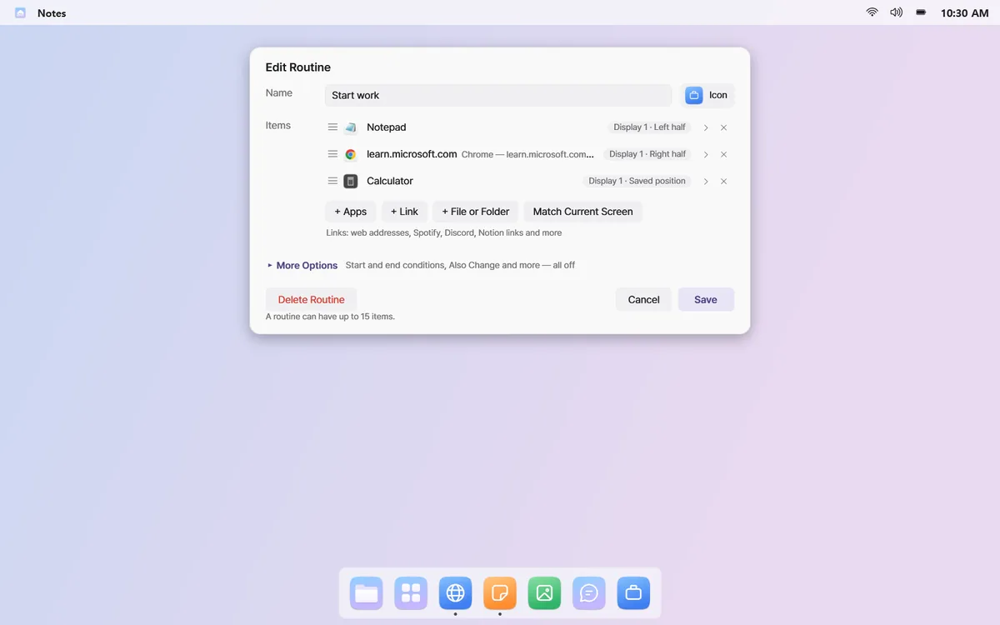
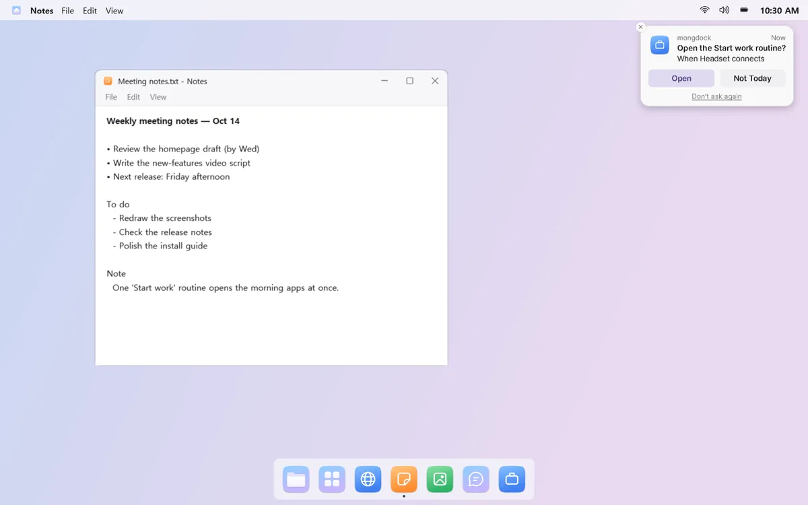

Open your everyday apps in one go
Group the apps, links, and games you use together into one routine. Click it, and they open on a new desktop, each in its place. End it, and only those windows close.
For example, click “Start work” and your mail, browser, and docs open on the displays and spots you picked.
Everything opens where it belongs
Click a routine, and a new virtual desktop opens with each app on the display and in the spot you chose, whether that's full screen or the left half. The menu bar shows the routine's name, and can also show how long you've spent there.


Save the screen you already have
Arrange your windows the way you like, then choose “Save Current Screen as Routine…”. That's it. mongdock can also notice apps you often open together and suggest a routine.




Apps, links, and games
Mix apps, links that open several tabs, and files or folders in one routine. Add Steam, Epic, or GOG games and launchers too, and they start as soon as the routine opens.

It asks at the right moment
Plug in a headset or display, turn on your PC, reach a day and time you set, or launch a certain app, and mongdock asks, “Open it?” It asks at most once a day per condition. By default, routines open only when you click.

Ending is just as tidy
“End Routine” closes only the windows the routine opened and leaves everything else alone. If the routine switched your sound output, volume, Do Not Disturb, or Dock auto-hide, ending it puts them back.
Start and end conditions and other options live under More in the editor, all off by default.
Good to know
- Apps that run only one window (like KakaoTalk or Discord) aren't opened again if they're already running. mongdock tells you which desktop they're on.
- Windows asking whether to save are left open when you end a routine.
- If mongdock restarts after you open a routine, it can't tell which windows the routine opened, so you'll need to close them yourself.